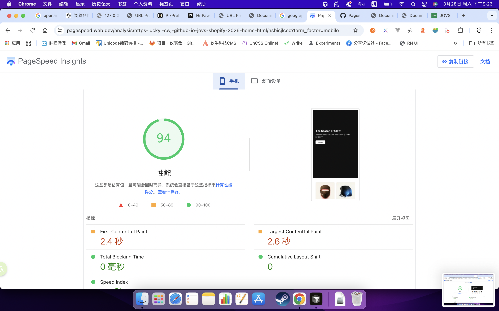
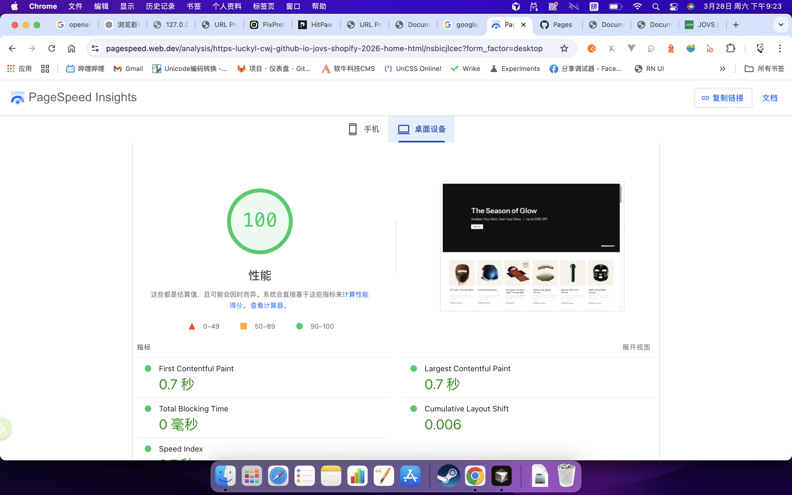

脚本复杂度
展示层收敛首页展示层脚本从主题壳与第三方堆叠里抽离出来，重构版只保留 Swiper 和页面自身逻辑， 后续继续排查问题、做 section 化和做真实环境接入都会更可控。
这份页面不只保留重构前后的基础数据对比，也补充说明这次真正做掉的优化项： 首屏关键样式已从整包 CSS 中抽离，顶部媒体做了优先级治理，非首屏 Swiper 改成按视区初始化， 部分模块还会按断点创建或销毁实例，避免桌面端和移动端都挂一套没必要的轮播逻辑。
首页展示层脚本从主题壳与第三方堆叠里抽离出来，重构版只保留 Swiper 和页面自身逻辑， 后续继续排查问题、做 section 化和做真实环境接入都会更可控。
首屏 Banner 的基础布局、文本定位和进度条关键样式直接内联到 head，
其余 common / home / swiper 样式改成 preload + onload，
减少整包 CSS 阻塞首屏。
不是把所有图片一刀切成懒加载，而是保留 3 张首屏核心图 loading="eager" +
fetchpriority="high"，其余图片统一 lazy，并把
81 / 81 图片收敛到 decoding="async"。
8 个非首屏模块改成通过 IntersectionObserver 延迟初始化；
其中部分模块还会随断点创建或销毁实例，避免页面一打开就把所有轮播同时跑起来。
本地重构版在未接入完整 Shopify 生产壳的情况下，已经能拿到相对健康的基础分数。


这里补的是“为什么会更快、更稳”，不只是对比结果本身。
preload，浏览器会先把第一屏排出来。
dns-prefetch 与 3 个 preconnect，优先建立到 jovs.com 和字体源的连接。
data-src，只给当前桌面端或移动端那支视频注入真实 source。
eager/high，避免“看得到位置，但资源优先级被压后”的反效果。
| 对比项 | 重构前 | 重构后 | 说明 |
|---|---|---|---|
| 展示层脚本 | 114 个 script |
2 个 script 逻辑边界更清楚
|
重构版把首页展示层逻辑单独收敛出来，后续接回 Shopify 主题壳时，排查第三方脚本影响会容易得多。 |
| 样式资源链路 | 38 个样式相关资源 | 4 个关键样式资源 38 → 4
|
1 份首屏关键样式直接内联，3 份外部 CSS 走 preload，从“整包样式一起阻塞”改成“首屏先出，完整样式稍后补齐”。 |
| 首屏关键样式 | 跟随整包 CSS 一起等待 | 直接放进 home.html 头部 首屏更早可读
|
Banner 高度、图文定位、按钮和进度条等首屏样式已经独立抽离，这正是这次补充说明里最核心的一项。 |
| 首屏媒体策略 | 媒体优先级和设备差异混在一起 | 按设备预热、按可见内容加载 媒体不再乱抢资源
|
顶部视频只给当前设备版本注入真实 source，所有视频统一 preload="metadata"，避免桌面端和移动端资源一起抢带宽。 |
| Swiper 初始化 | 17 个实例更接近一次性启动 | 11 个实例，其中 8 个延迟初始化 进入视区再挂载
|
initSwiperWhenVisible 会在模块接近可视区时再初始化 Swiper，默认 rootMargin 为 400px，兼顾提前准备和首屏负载。 |
| 断点条件挂载 | 桌面与移动端更容易共用同一套轮播逻辑 | 按断点创建 / destroy 实例 避免无意义挂载
|
Awards Logo、Add Text Card、Shop by Concern 等模块会在不同端按需启用或销毁 Swiper，
不需要轮播的布局直接回退到静态栅格。
|
| 图片加载与 CLS | 206 / 232 lazy，异步解码未统一 | 78 / 81 lazy，81 / 81 async 首屏与非首屏分流
|
这次没有简单地“把所有图都 lazy”，而是保留首屏 3 张核心图高优先级，其他图片统一 lazy + async，并补齐大量显式尺寸。 |
| 可访问性与稳定性 | 通用 CTA 和轮播控件语义偏弱 | 补齐 aria、键盘与状态同步 交互更稳
|
CTA 补 aria-label，轮播箭头支持 Enter / Space，并同步 aria-disabled 与 tabindex。 |
home.css 全量下载完，而是先把首屏必须用到的样式直接内联在页面头部。
Awards Logo、Add Text Card、Prohibit Select、Add Blog 等模块接近视区时再初始化。
metadata 预加载，真实视频源延后注入；首屏图片才保留 eager/high。
swiper-prohibit-select 初始高度补了二次刷新
初始化后和图片加载完成后都会主动 update()，减少“刚进来高度不对，滑两次才恢复”的问题。
Shop now、Learn more、View all 这类通用文案现在都有更具体的访问语义。
alt，减少语义噪音。
这部分不是重构版新增的问题，而是当前线上版本里比较明显、且本次重构已经刻意规避的交互与样式风险。


这次首页重构的价值，不只是把页面从 hovs.html 迁到 home.html，
而是把首屏样式、媒体优先级、Swiper 初始化时机和交互语义全部重新收口，让页面在 Shopify 体系里更轻、更稳，也更适合长期运营。
如果要对外解释，这一页最值得强调的补充点就是： 首屏关键样式已经抽离出来，非首屏轮播不再一次性全部启动，首屏资源和非首屏资源的优先级被明确分开了。